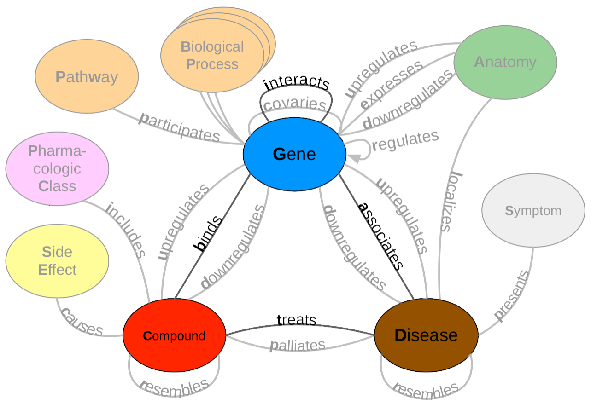

David N. Nicholson 0000-0003-0002-5761
· danich1
Department of Systems Pharmacology and Translational Therapeutics, University of Pennsylvania
· Funded by GBMF4552
Daniel S. Himmelstein 0000-0002-3012-7446
· dhimmel
· dhimmel
Department of Systems Pharmacology and Translational Therapeutics, University of Pennsylvania
· Funded by GBMF4552
Casey S. Greene 0000-0001-8713-9213
· cgreene
· GreeneScientist
Department of Systems Pharmacology and Translational Therapeutics, University of Pennsylvania
· Funded by GBMF4552 and R01 HG010067
Abstract
Knowledge graphs support multiple research efforts by providing contextual information for biomedical entities, constructing networks, and supporting the interpretation of high-throughput analyses.
These databases are populated via some form of manual curation, which is difficult to scale in the context of an increasing publication rate.
Data programming is a paradigm that circumvents this arduous manual process by combining databases with simple rules and heuristics written as label functions, which are programs designed to automatically annotate textual data.
Unfortunately, writing a useful label function requires substantial error analysis and is a nontrivial task that takes multiple days per function.
This makes populating a knowledge graph with multiple nodes and edge types practically infeasible.
We sought to accelerate the label function creation process by evaluating the extent to which label functions could be re-used across multiple edge types.
We used a subset of an existing knowledge graph centered on disease, compound, and gene entities to evaluate label function re-use.
We determined the best label function combination by comparing a baseline database-only model with the same model but added edge-specific or edge-mismatch label functions.
We confirmed that adding additional edge-specific rather than edge-mismatch label functions often improves text annotation and shows that this approach can incorporate novel edges into our source knowledge graph.
We expect that continued development of this strategy has the potential to swiftly populate knowledge graphs with new discoveries, ensuring that these resources include cutting-edge results.
Introduction
Knowledge bases are essential resources that hold complex structured and unstructured information.
These resources have been used to construct networks for drug repurposing discovery [1,2,3] or as a source of training labels for text mining systems [4,5,6].
Populating knowledge bases often requires highly trained scientists to read biomedical literature and summarize the results through manual curation [7].
In 2007, researchers estimated that filling a knowledge base via manual curation would require approximately 8.4 years to complete [8].
As the rate of publications increases exponentially [9], using only manual curation to populate a knowledge base has become nearly impractical.
Relationship extraction is one of several solutions to the challenge posed by an exponentially growing body of literature [7].
This process creates an expert system to automatically scan, detect, and extract relationships from textual sources.
These expert systems fall into three types: unsupervised, rule-based, and supervised systems.
Unsupervised systems extract relationships without the need for annotated text.
These approaches utilize linguistic patterns such as the frequency of two entities appearing in a sentence together more often than chance, commonly referred to as co-occurrence [10,11,12,13,14,15,16,17,18].
For example, a possible system would say gene X is associated with disease Y because gene X and disease Y appear together more often than chance [10].
Besides frequency, other systems can utilize grammatical structure to identify relationships [19].
This information is modeled in the form of a tree data structure, termed a dependency tree.
Dependency trees depict words as nodes, and edges represent a word’s grammatical relationship with one another.
Through clustering on these generated trees, one can identify patterns that indicate a biomedical relationship [19].
Unsupervised systems are desirable since they do not require well-annotated training data; however, precision may be limited compared to supervised machine learning systems.
Rule-based systems rely heavily on expert knowledge to perform relationship extraction.
These systems use linguistic rules and heuristics to identify critical sentences or phrases that suggest the presence of a biomedical relationship [20,21,22,23,24,25].
For example, a hypothetical extractor focused on protein phosphorylation events would identify sentences containing the phrase “gene X phosphorylates gene Y” [20].
These approaches provide exact results, but the quantity of positive results remains modest as sentences consistently change in form and structure.
For this project, we constructed our label functions without the aid of these works; however, the approaches mentioned in this section provide substantial inspiration for novel label functions in future endeavors.
Supervised systems depend on machine learning classifiers to predict the existence of a relationship using biomedical text as input.
These classifiers can range from linear methods such as support vector machines [26,27] to deep learning [28,29,30,31,32,33], which all require access to well-annotated datasets.
Typically, these datasets are usually constructed via manual curation by individual scientists [34,35,36,37,38] or through community-based efforts [39,40,41].
Often, these datasets are well annotated but are modest in size, making model training hard as these algorithms become increasingly complex.
Distant supervision is a paradigm that quickly sidesteps manual curation to generate large training datasets.
This technique assumes that positive examples have been previously established in selected databases, implying that the corresponding sentences or data points are also positive [4].
The central problem with this technique is that generated labels are often of low quality, resulting in many false positives [42].
Despite this caveat there have been notable effort using this technique [43,44,45].
Data programming is one proposed solution to amend the false positive problem in distant supervision.
This strategy combines labels obtained from distant supervision with simple rules and heuristics written as small programs called label functions [46].
These outputs are consolidated via a noise-aware model to produce training labels for large datasets.
Using this paradigm can dramatically reduce the time required to obtain sufficient training data; however, writing a helpful label function requires substantial time and error analysis.
This dependency makes constructing a knowledge base with a myriad of heterogenous relationships nearly impossible as tens or hundreds of label functions are necessary per relationship type.
This paper seeks to accelerate the label function creation process by measuring how label functions can be reused across different relationship types.
We hypothesized that sentences describing one relationship type might share linguistic features such as keywords or sentence structure with sentences describing other relationship types.
If this hypothesis were to, one could drastically reduce the time needed to build a relation extractor system and swiftly populate large databases like Hetionet v1.
We conducted a series of experiments to estimate how label function reuse enhances performance over distant supervision alone.
We focused on relationships that indicated similar types of physical interactions (i.e., gene-binds-gene and compound-binds-gene) and two more distinct types (i.e., disease-associates-gene and compound-treats-disease).
Methods and Materials
Hetionet
Hetionet v1 [3] is a heterogeneous network that contains pharmacological and biological information.
This network depicts information in the form of nodes and edges of different types.
Nodes in this network represent biological and pharmacological entities, while edges represent relationships between entities.
Hetionet v1 contains 47,031 nodes with 11 different data types and 2,250,197 edges that represent 24 different relationship types (Figure 1).
Edges in Hetionet v1 were obtained from open databases, such as the GWAS Catalog [47], Human Interaction database [48] and DrugBank [49].
For this project, we analyzed performance over a subset of the Hetionet v1 edge types: disease associates with a gene (DaG), compound binds to a gene (CbG), compound treating a disease (CtD), and gene interacts with gene (GiG) (bolded in Figure 1).
Figure 1: A metagraph (schema) of Hetionet v1 where biomedical entities are represented as nodes and the relationships between them are represented as edges.
We examined performance on the highlighted subgraph; however, the long-term vision is to capture edges for the entire graph.
Dataset
We used PubTator Central [50] as input to our analysis.
PubTator Central provides MEDLINE abstracts that have been annotated with well-established entity recognition tools including Tagger One [51] for disease, chemical and cell line entities, tmVar [52] for genetic variation tagging, GNormPlus [53] for gene entities and SR4GN [54] for species entities.
We downloaded PubTator Central on March 1, 2020, at which point it contained approximately 30,000,000 documents.
After downloading, we filtered out annotated entities that were not contained in Hetionet v1.
We extracted sentences with two or more annotations and termed these sentences as candidate sentences.
We used the Spacy’s English natural language processing (NLP) pipeline (en_core_web_sm) [55] to generate dependency trees and parts of speech tags for every extracted candidate sentence.
Each candidate sentence was stratified by their corresponding abstract ID to produce a training set, tuning set, and a testing set.
We used random assortment to assign dataset labels to each abstract.
Every abstract had a 70% chance of being labeled training, 20% chance of being labeled tuning, and 10% chance of being labeled testing.
Despite the power of data programming, all text mining systems need to have ground truth labels to be well-calibrated.
We hand-labeled five hundred to a thousand candidate sentences of each edge type to obtain a ground truth set (Table 1).
Table 1: Statistics of Candidate Sentences.
We sorted each abstract into a training, tuning and testing set.
Numbers in parentheses show the number of positives and negatives that resulted from the hand-labeling process.
Relationship
Train
Tune
Test
Disease Associates Gene
2.49 M
696K (397+, 603-)
348K (351+, 649-)
Compound Binds Gene
2.4M
684K (37+, 463-)
341k (31+, 469-)
Compound Treats Disease
1.5M
441K (96+, 404-)
223K (112+, 388-)
Gene Interacts Gene
11.2M
2.19M (60+, 440-)
1.62M (76+, 424-)
Label Functions for Annotating Sentences
The challenge of having too few ground truth annotations is familiar to many natural language processing applications, even when unannotated text is abundant.
Data programming circumvents this issue by quickly annotating large datasets using multiple noisy signals emitted by label functions [46].
Label functions are simple pythonic functions that emit: a positive label (1), a negative label (0), or abstain from emitting a label (-1).
These functions can use different approaches or techniques to emit a label; however, these functions can be grouped into simple categories discussed below.
Once constructed, these functions are combined using a generative model to output a single annotation.
This single annotation is a consensus probability score bounded between 0 (low chance of mentioning a relationship) and 1 (high chance of mentioning a relationship).
We used these annotations to train a discriminative model for the final classification step.
Label Function Categories
Label functions can be constructed in various ways; however, they also share similar characteristics.
We grouped functions into databases and text patterns.
The majority of our label functions fall into the text pattern category (Supplemental Table 2).
Further, we described each label function category and provided an example that refers to the following candidate sentence: “PTK6 may be a novel therapeutic target for pancreatic cancer”.
Databases: These label functions incorporate existing databases to generate a signal, as seen in distant supervision [4].
These functions detect if a candidate sentence’s co-mention pair is present in a given database.
Our label function emits a positive label if the pair is present and abstains otherwise.
If the pair is not present in any existing database, a separate label function emits a negative label.
We used a separate label function to prevent a label imbalance problem, which can occur when a single function labels every possible sentence despite being correct or not.
If this problem isn’t handled correctly, the generative model could become biased and only emit one prediction (solely positive or solely negative) for every sentence.
Text Patterns: These label functions are designed to use keywords or sentence context to generate a signal.
For example, a label function could focus on the number of words between two mentions and emit a label if two mentions are too close.
Alternatively, a label function could focus on the parts of speech contained within a sentence and ensures a verb is present.
Besides parts of speech, a label function could exploit dependency parse trees to emit a label.
These trees are akin to the tree data structure where words are nodes and edges are how each word modifies each other.
Label functions that use these parse trees will test if the generated tree matches a pattern and emits a positive label if true.
For our analysis, we used previously identified patterns designed for biomedical text to generate our label functions [tag:global_network?].
Each text pattern label function was constructed via manual examination of sentences within the training set.
For example, using the candidate sentence above, one would identify the phrase “novel therapeutic target” and incorporate this phrase into a global list that a label function would use to check if present in a sentence.
After initial construction, we tested and augmented the label function using sentences in the tune set.
We repeated this process for every label function in our repertoire.
Table 2: The distribution of each label function per relationship.
Relationship
Databases (DB)
Text Patterns (TP)
DaG
7
30
CtD
3
22
CbG
9
20
GiG
9
28
Training Models
Generative Model
The generative model is a core part of this automatic annotation framework.
It integrates multiple signals emitted by label functions to assign each candidate sentence the most appropriate training class.
This model takes as input a label function output in the form of a matrix where rows represent candidate sentences, and columns represent each label function (\(\Lambda^{nxm}\)).
Once constructed, this model treats the true training class (\(Y\)) as a latent variable and assumes that each label function is independent of one another.
Under these two assumptions, the model finds the optimal parameters by minimizing a loglikelihood function marginalized over the latent training class.
Following optimization, the model emits a probability estimate that each sentence belongs to the positive training class.
At this step, each probability estimate can be discretized via a chosen threshold into a positive or negative class.
We used a threshold of 0.5 for discretizing our training classes within our analysis.
For more information on how the likelihood function is constructed and minimized, refer to [56].
Discriminative Model
The discriminative model is the final step in this framework.
This model uses training labels generated from the generative model combined with sentence features to classify the presence of a biomedical relationship.
Typically, the discriminative model is a neural network.
We used BioBERT [31], a BERT [57] model trained on all papers and abstracts within Pubmed Central [58], as our discriminative model.
BioBERT provides its own set of word embeddings, dense vectors representing words that models such as neural networks can use to construct sentence features.
We downloaded a pre-trained version of this model using huggingface’s transformer python package [59] and fine-tuned it using our generated training labels.
Our fine-tuning approach involved freezing all downstream layers except for the classification head of this model.
Next, we trained this model for 10 epochs using the Adam optimizer [60] with huggingface’s default parameter settings and a learning rate of 0.001.
Experimental Design
Reusing label functions across edge types would substantially reduce the number of label functions required to extract multiple relationships from biomedical literature.
We first established a baseline by training a generative model using only distant supervision label functions designed for the target edge type (see Supplemental Methods).
Then we compared the baseline model with models that incorporated a set number of text pattern label functions.
Using a sampling with replacement approach, we sampled these text pattern label functions from three different groups: within edge types, across edge types, and from a pool of all label functions.
We compared within-edge-type performance to across-edge-type and all-edge-type performance.
We sampled a fixed number of label functions for each edge type consisting of five evenly spaced numbers between one and the total number of possible label functions.
We repeated this sampling process 50 times for each point.
Furthermore, we also trained the discriminative model using annotations from the generative model trained on edge-specific label functions at each point.
We report the performance of both models in terms of the area under the receiver operating characteristic curve (AUROC) and the area under the precision-recall curve (AUPR).
Ensuing model evaluations, we quantified the number of edges we could incorporate into Hetionet v1.
We used our best performing discriminative model to score every candidate sentence within our dataset and grouped candidates based on their mention pair.
We took the max score within each candidate group, and this score represents the probability of the existence of an edge.
We established edges using a cutoff score that produced an equal error rate between the false positives and false negatives.
Lastly, we report the number of preexisting edges we could recall and the number of novel edges we can incorporate.
Results
Generative Model Using Randomly Sampled Label Functions
Creating label functions is a labor-intensive process that can take days to accomplish.
We sought to accelerate this process by measuring how well label functions can be reused.
We evaluated this by performing an experiment where label functions are sampled on an individual (edge vs. edge) level and a global (collective pool of sources) level.
We observed that performance increased when edge-specific label functions were added to an edge-specific baseline model, while label function reuse usually provided less benefit (AUROC Figure 2, AUPR Supplemental Figure 5).
The quintessential example of this overarching trend is the Compound treats Disease (CtD) edge type, where edge-specific label functions consistently outperformed transferred label functions.
However, there is evidence that label function transferability may be feasible for selected edge types and label function sources.
Performance increases as more GiG label functions are incorporated into the CbG baseline model and vice versa.
This trend suggests that sentences for GiG and CbG may share similar linguistic features or terminology that allows for label functions to be reused, which could relate to both describing physical interaction relationships.
Perplexingly, edge-specific Disease associates Gene (DaG) label functions did not improve performance over label functions drawn from other edge types.
Overall, only CbG and GiG showed significant signs of reusability.
This pattern suggests that label function transferability may be possible for these two edge types.
Figure 2: Edge-specific label functions perform better than edge-mismatch label functions, but certain mismatch situations show signs of successful transfer.
Each line plot header depicts the edge type the generative model is trying to predict, while the colors represent the source of label functions.
For example, orange represents sampling label functions designed to predict the Compound treats Disease (CtD) edge type.
The x-axis shows the number of randomly sampled label functions incorporated as an addition to the database-only baseline model (the point at 0).
The y-axis shows the area under the receiver operating curve (AUROC).
Each point on the plot shows the average of 50 sample runs, while the error bars show the 95% confidence intervals of all runs.
The baseline and “All” data points consist of sampling from the entire fixed set of label functions.
We found that sampling from all label function sources at once usually underperformed relative to edge-specific label functions (Figure 3 and Supplemental Figure 6).
The gap between edge-specific sources and all sources widened as we sampled more label functions.
CbG is a prime example of this trend (Figure 3 and Supplemental Figure 6), while CtD and GiG show a similar but milder trend.
DaG was the exception to the general rule.
The pooled set of label functions improved performance over the edge-specific ones, which aligns with the previously observed results for individual edge types (Figure 2).
When pooling all label functions, the decreasing trend supports the notion that label functions cannot simply transfer between edge types (exception being CbG on GiG and vice versa).
Figure 3: Using all label functions generally hinders generative model performance.
Each line plot header depicts the edge type the generative model is trying to predict, while the colors represent the source of label functions.
For example, orange represents sampling label functions designed to predict the Compound treats Disease (CtD) edge type.
The x-axis shows the number of randomly sampled label functions incorporated as an addition to the database-only baseline model (the point at 0).
The y-axis shows the area under the receiver operating curve (AUROC).
Each point on the plot shows the average of 50 sample runs, while the error bars show the 95% confidence intervals of all runs.
The baseline and “All” data points consist of sampling from the entire fixed set of label functions.
Discriminative Model Performance
The discriminative model is designed to augment performance over the generative model by incorporating textual features along with estimated training labels.
The discriminative model is a piecewise convolutional neural network trained over word embeddings (See Methods and Materials).
We found that the discriminative model generally out-performed the generative model as more edge-specific label functions are incorporated (Figure 4 and Supplemental Figure 7).
The discriminative model’s performance is often poorest when very few edge-specific label functions are added to the baseline model (seen in Disease associates Gene (DaG), Compound binds Gene (CbG) and Gene interacts Gene (GiG)).
This suggests that generative models trained with more label functions produce outputs that are more suitable for training discriminative models.
An exception to this trend is Compound treats Disease (CtD) where the discriminative model out-performs the generative model at all levels of sampling.
We observed the opposite trend with the Compound-binds-Gene (CbG) edges: the discriminative model was always poorer or indistinguishable from the generative model.
Interestingly, the AUPR for CbG plateaus below the generative model and decreases when all edge-specific label functions are used (Supplemental Figure 7).
This suggests that the discriminative model might be predicting more false positives in this setting.
Incorporating more edge-specific label functions usually improves performance for the discriminative model over the generative model.
Figure 4: The discriminative model usually improves at a faster rate than the generative model as more edge-specific label function are included.
The line plot headers represent the specific edge type the discriminative model is trying to predict.
The x-axis shows the number of randomly sampled label functions that are incorporated into the baseline model (point at 0).
The y axis shows the area under the receiver operating curve (AUROC).
Each datapoint represents the average of 50 sample runs and the error bars represent the 95% confidence interval of each run.
The baseline and “All” data points consist of sampling from the entire fixed set of label functions.
Discussion
We measured the extent to which label functions can be re-used across multiple edge types to extract relationships from literature.
Through our sampling experiment, we found that adding edge-specific label functions increases performance for the generative model (Figure 2).
We found that label functions designed from relatively related edge types can increase performance (Gene interacts Gene (GiG) label functions predicting the Compound binds Gene (CbG) edge and vice versa), while the Disease associates Gene (DaG) edge type remained agnostic to label function sources (Figure 2 and Supplemental Figure 5).
Furthermore, we found that using all label functions at once generally hurts performance with the exception being the DaG edge type (Supplemental Figures 3 and 6).
One possibility for this observation is that DaG is a broadly defined edge type.
For example, DaG may contain many concepts related to other edge types such as Disease (up/down) regulating a Gene, which makes it more agnostic to label function sources (examples highlighted in our annotated sentences).
Regarding the discriminative model, adding edge-specific label function substantially improved performance for two out of the four edge types (Compound treats Disease (CtD) and Disease associates Gene (DaG)) (Figure 4 and Supplemental Figure 7).
Gene interacts Gene (GiG) and Compound binds Gene (CbG) discriminative models showed minor improvements compared to the generative model, but only when nearly all edge-specific label functions are included (Figure 4 and Supplemental Figure 7).
We came across a large amount of spurious gene mentions when working with the discriminative model and believe that these mentions contributed to CbG and GiG’s hindered performance.
We encountered difficulty in calibrating each discriminative model (Supplemental Figure 8).
The temperature scaling algorithm appears to improve calibration for the highest scores for each model but did not successfully calibrate throughout the entire range of predictions.
Improving performance for all predictions may require more labeled examples or may be a limitation of the approach in this setting.
Even with these limitations, this early-stage approach could recall many existing edges from an existing knowledge base, Hetionet v1, and suggest many new high-confidence edges for inclusion (Supplemental Figure 9).
Our findings suggest that further work, including an expansion of edge types and a move to full text from abstracts, may make this approach suitable for building continuously updated knowledge bases to address drug repositioning and other biomedical challenges.
Conclusion and Future Direction
Filling out knowledge bases via manual curation can be an arduous and erroneous task [8].
As the rate of publications increases, relying on manual curation alone becomes impractical.
Data programming, a paradigm that uses label functions as a means to speed up the annotation process, can be used as a solution for this problem.
An obstacle for this paradigm, however, is creating useful label functions, which takes a considerable amount of time.
We tested the feasibility of reusing label functions as a way to reduce the total number of label functions required for strong prediction performance.
We conclude that label functions may be re-used with closely related edge types, but that re-use does not improve performance for most pairings.
The discriminative model’s performance improves as more edge-specific label functions are incorporated into the generative model; however, we did notice that performance greatly depends on the annotations provided by the generative model.
This work sets up the foundation for creating a common framework that mines text to create edges.
Within this framework we would continuously incorporate new knowledge as novel findings are published, while providing a single confidence score for an edge via sentence score consolidation.
As opposed to many existing knowledge graphs (for example, Hetionet v1 where text-derived edges generally cannot be exactly attributed to excerpts from literature [3,61]), our approach has the potential to annotate each edge based on its source sentences.
In addition, edges generated with this approach would be unencumbered from upstream licensing or copyright restrictions, enabling openly licensed hetnets at a scale not previously possible [62,63,64].
New multitask learning [65] strategies may make it even more practical to reuse label functions to construct continuously updating literature-derived knowledge graphs.
The authors would like to thank Christopher Ré’s group at Stanford University, especially Alex Ratner and Steven Bach, for their assistance with this project.
We also want to thank Graciela Gonzalez-Hernandez for her advice and input with this project.
This work was support by Grant GBMF4552 from the Gordon Betty Moore Foundation.
References
1.
Graph Theory Enables Drug Repurposing – How a Mathematical Model Can Drive the Discovery of Hidden Mechanisms of Action
Ruggero Gramatica, T Di Matteo, Stefano Giorgetti, Massimo Barbiani, Dorian Bevec, Tomaso Aste
Systematic integration of biomedical knowledge prioritizes drugs for repurposing
Daniel Scott Himmelstein, Antoine Lizee, Christine Hessler, Leo Brueggeman, Sabrina L Chen, Dexter Hadley, Ari Green, Pouya Khankhanian, Sergio E Baranzini
Distant supervision for relation extraction without labeled data
Mike Mintz, Steven Bills, Rion Snow, Dan Jurafsky
Proceedings of the Joint Conference of the 47th Annual Meeting of the ACL and the 4th International Joint Conference on Natural Language Processing of the AFNLP: Volume 2 - ACL-IJCNLP '09 (2009) https://doi.org/fg9q43
Growth rates of modern science: A bibliometric analysis based on the number of publications and cited references: Growth Rates of Modern Science: A Bibliometric Analysis Based on the Number of Publications and Cited References
Lutz Bornmann, Rüdiger Mutz
Journal of the Association for Information Science and Technology (2015-11) https://doi.org/gfj5zc
PolySearch2: a significantly improved text-mining system for discovering associations between human diseases, genes, drugs, metabolites, toxins and more
BioCreative V CDR task corpus: a resource for chemical disease relation extraction
Jiao Li, Yueping Sun, Robin J Johnson, Daniela Sciaky, Chih-Hsuan Wei, Robert Leaman, Allan Peter Davis, Carolyn J Mattingly, Thomas C Wiegers, Zhiyong Lu
A Proteome-Scale Map of the Human Interactome Network
Thomas Rolland, Murat Taşan, Benoit Charloteaux, Samuel J Pevzner, Quan Zhong, Nidhi Sahni, Song Yi, Irma Lemmens, Celia Fontanillo, Roberto Mosca, … Marc Vidal
DrugBank 5.0: a major update to the DrugBank database for 2018
David S Wishart, Yannick D Feunang, An C Guo, Elvis J Lo, Ana Marcu, Jason R Grant, Tanvir Sajed, Daniel Johnson, Carin Li, Zinat Sayeeda, … Michael Wilson
<span class="nocase">Transformers: State-of-the-Art Natural Language Processing</span>
Thomas Wolf, Lysandre Debut, Victor Sanh, Julien Chaumond, Clement Delangue, Anthony Moi, Perric Cistac, Clara Ma, Yacine Jernite, Julien Plu, … Alexander M Rush
Generative Model Using Randomly Sampled Label Functions
Individual Sources
Figure 5: Edge-specific label functions improve performance over edge-mismatch label functions.
Each line plot header depicts the edge type the generative model is trying to predict, while the colors represent the source of label functions.
For example, orange represents sampling label functions designed to predict the Compound treats Disease (CtD) edge type.
The x-axis shows the number of randomly sampled label functions incorporated as an addition to the database-only baseline model (the point at 0).
The y-axis shows the area under the precision-recall curve (AUPR).
Each point on the plot shows the average of 50 sample runs, while the error bars show the 95% confidence intervals of all runs.
The baseline and “All” data points consist of sampling from the entire fixed set of label functions.
Collective Pool of Sources
Figure 6: Using all label functions generally hinders generative model performance.
Each line plot header depicts the edge type the generative model is trying to predict, while the colors represent the source of label functions.
For example, orange represents sampling label functions designed to predict the Compound treats Disease (CtD) edge type.
The x-axis shows the number of randomly sampled label functions incorporated as an addition to the database-only baseline model (the point at 0).
The y-axis shows the area under the precision-recall curve (AUPR).
Each point on the plot shows the average of 50 sample runs, while the error bars show the 95% confidence intervals of all runs.
The baseline and “All” data points consist of sampling from the entire fixed set of label functions.
Discriminative Model Performance
Figure 7: The discriminator model improves performance as the number of edge-specific label functions is added to the baseline model.
The line plot headers represents the specific edge type the discriminator model is trying to predict.
The x-axis shows the number of randomly sampled label functions incorporated on top of the baseline model (point at 0).
The y axis shows the area under the precision recall curve (AUPR).
Each datapoint shows the average of 50 sample runs, while the error bars represents the 95% confidence interval at each point.
The baseline and “All” data points consist of sampling from the entire fixed set of label functions.
Discriminative Model Calibration
Figure 8: Deep learning models are overconfident in their predictions and need to be calibrated after training.
These are calibration plots for the discriminative model, where the green line represents the predictions before calibration and the blue line shows predictions after calibration.
Data points that lie closer to the diagonal line show better model calibration, while data points far from the diagonal line show poor performance.
A perfectly calibrated model would align straight along the diagonal line.
Even deep learning models with impressive AUROC and AUPR statistics can be subject to poor calibration.
Typically, these models are overconfident in their predictions [66,67].
We attempted to use temperature scaling to fix the calibration of the best performing discriminative models (Figure 8).
Before calibration (green lines), our models were aligned with the ideal calibration only when predicting low probability scores (close to 0.25).
Applying the temperature scaling calibration algorithm (blue lines) did not substantially improve the calibration of the model in most cases.
The exception to this pattern is the Disease associates Gene (DaG) model where high confidence scores are shown to be better calibrated.
Overall, calbrating deep learning models is a nontrivial task that requires more complex approaches to accomplish.
Text Mined Edges Can Expand a Database-derived Knowledge Graph
Figure 9: Text-mined edges recreate a substantial fraction of an existing knowledge graph and include new predictions.
This bar chart shows the number of edges we can successfully recall in green and shows the number of new edges that can be added in blue.
The recall for the Hetionet v1 knowledge graph is shown as a percentage in parentheses.
For example, for the Compound treats Disease (CtD) edge our method recalls 85% of existing edges and adds 6,088 new edges.
One of the goals in our work is to measure the extent to which learning multiple edge types could construct a biomedical knowledge graph.
Using Hetionet v1 as an evaluation set, we measured this framework’s recall and quantified how many new edges could be added with high confidence.
Overall, we were able to recall more than half of preexisting edges for all edge types (Figure 9) and report our top ten scoring sentences for each edge type in Supplemental Table 11.
Our best recall is with the Compound treats Disease (CtD) edge type, where we retain 85% of preexisting edges.
Plus, we can add over 6,000 new edges to that category.
In contrast, we could only recall close to 70% of existing edges for the other categories; however, we can add over 40,000 novel edges to each category.
This highlights the fact that Hetionet v1 is missing a compelling amount of biomedical information and this framework is a viable way to close the information gap.
Comparison with CoCoScore using Hetionet v1 as an Evaluation Set
Figure 10: Our extractor shows similar performance to a previously published method when using Hetionet v1 as an evaluation set.
We compared our model (blue) with the CoCoScore model [tag:cocoscore?] (green).
The y axis represents AUROC and the x axis represents the edge type both models are trying to predict.
Our model showed promising performance in terms of recalling edges in Hetionet v1.
We assessed our model’s performance relative to a recently published method [tag:cocoscore?].
Though our method is primarily designed to predict assertions, not edges, we compared performance at an edge level because this was available for CoCoScore.
We found that a simple summary approach, max sentence score, provided comparable performance to the CoCoScore for the compound treats disease (CtD) edge type and slightly poorer performance for other edge types (Supplemental Figure 10).
Sentence-level scores can be integrated in multiple ways, and approaches that consider more complexity (e.g., the number of sentences with high-probability) should be evaluated in future work.
Supplemental Tables
Discriminative Model Calibration Tables
Table 3: Contains the top ten Disease-associates-Gene confidence scores before and after model calbration. Disease mentions are highlighted in brown and Gene mentions are highlighted in blue.
Disease Name
Gene Symbol
Text
Before Calibration
After Calibration
prostate cancer
DKK1
conclusion : high dkk-1 serum levels are associated with a poor survival in patients with prostate cancer .
0.999
0.916
breast cancer
ERBB2
conclusion : her-2 / neu overexpression in primary breast carcinoma is correlated with patients ’ age ( under age 50 ) and calcifications at mammography .
0.998
0.906
breast cancer
ERBB2
the results of multiple linear regression analysis , with her2 as the dependent variable , showed that family history of breast cancer was significantly associated with elevated her2 levels in the tumors ( p = 0.0038 ) , after controlling for the effects of age , tumor estrogen receptor , and dna index .
0.998
0.904
colon cancer
SP3
ba also decreased expression of sp1 , sp3 and sp4 transcription factors which are overexpressed in colon cancer cells and decreased levels of several sp-regulated genes including survivin , vascular endothelial growth factor , p65 sub-unit of nfkb , epidermal growth factor receptor , cyclin d1 , and pituitary tumor transforming gene-1 .
0.998
0.902
breast cancer
ERBB2
in breast cancer , overexpression of her2 is associated with an aggressive tumor phenotype and poor prognosis .
0.998
0.898
breast cancer
BCL2
in clinical breast cancer samples , high bcl2 expression was associated with poor prognosis .
0.997
0.886
adrenal gland cancer
TP53
the mechanisms of adrenal tumorigenesis remain poorly established ; the r337h germline mutation in the p53 gene has previously been associated with acts in brazilian children .
0.996
0.883
prostate cancer
AR
the androgen receptor was expressed in all primary and metastatic prostate cancer tissues and no mutations were identified .
0.996
0.881
urinary bladder cancer
PIK3CA
conclusions : increased levels of fgfr3 and pik3ca mutated dna in urine and plasma are indicative of later progression and metastasis in bladder cancer .
0.995
0.866
ovarian cancer
EPAS1
the log-rank test showed that nuclear positive immunostaining for hif-1alpha ( p = .002 ) and cytoplasmic positive immunostaining for hif-2alpha ( p = .0112 ) in tumor cells are associated with poor prognosis of patients with ovarian carcinoma .
0.994
0.86
Table 4: Contains the bottom ten Disease-associates-Gene confidence scores before and after model calbration. Disease mentions are highlighted in brown and Gene mentions are highlighted in blue.
Disease Name
Gene Symbol
Text
Before Calibration
After Calibration
endogenous depression
EP300
from a clinical point of view , p300 amplitude should be considered as a psychophysiological index of suicidal risk in major depressive disorder .
0.202
0.379
Alzheimer’s disease
PDK1
from prion diseases to alzheimer ’s disease : a common therapeutic target , [pdk1 ] .
0.2
0.378
endogenous depression
HTR1A
gepirone , a selective serotonin ( 5ht1a ) partial agonist in the treatment of major depression .
0.199
0.378
Gilles de la Tourette syndrome
FGF9
there were no differences in gender distribution , age at tic onset or td diagnosis , tic severity , proportion with current diagnoses of ocd/oc behavior or attention deficit hyperactivity disorder ( adhd ) , cbcl internalizing , externalizing , or total problems scores , ygtss scores , or gaf scores .
0.185
0.37
hematologic cancer
MLANA
methods : the sln sections ( n = 214 ) were assessed by qrt assay for 4 established messenger rna biomarkers : mart-1 , mage-a3 , galnac-t , and pax3 .
0.18
0.368
endogenous depression
MAOA
alpha 2-adrenoceptor responsivity in depression : effect of chronic treatment with moclobemide , a selective mao-a-inhibitor , versus maprotiline .
0.179
0.367
chronic kidney failure
B2M
to evaluate comparative beta 2-m removal we studied six stable end-stage renal failure patients during high-flux 3-h haemodialysis , haemodia-filtration , and haemofiltration , using acrylonitrile , cellulose triacetate , polyamide and polysulphone capillary devices .
0.178
0.366
hematologic cancer
C7
serum antibody responses to four haemophilus influenzae type b capsular polysaccharide-protein conjugate vaccines ( prp-d , hboc , c7p , and prp-t ) were studied and compared in 175 infants , 85 adults and 140 2-year-old children .
0.174
0.364
hypertension
AVP
portohepatic pressures , hepatic function , and blood gases in the combination of nitroglycerin and vasopressin : search for additive effects in cirrhotic portal hypertension .
0.168
0.361
endogenous depression
GAD1
within-individual deflections in gad , physical , and social symptoms predicted later deflections in depressive symptoms , and deflections in depressive symptoms predicted later deflections in gad and separation anxiety symptoms .
0.149
0.349
Table 5: Contains the top ten Compound-treats-Disease confidence scores after model calbration. Disease mentions are highlighted in brown and Compound mentions are highlighted in red.
Compound Name
Disease Name
Text
Before Calibration
After Calibration
Prazosin
hypertension
experience with prazosin in the treatment of hypertension .
0.997
0.961
Methyldopa
hypertension
oxprenolol plus cyclopenthiazide-kcl versus methyldopa in the treatment of hypertension .
0.997
0.961
Methyldopa
hypertension
atenolol and methyldopa in the treatment of hypertension .
0.996
0.957
Prednisone
asthma
prednisone and beclomethasone for treatment of asthma .
0.995
0.953
Sulfasalazine
ulcerative colitis
sulphasalazine , used in the treatment of ulcerative colitis , is cleaved in the colon by the metabolic action of colonic bacteria on the diazo bond to release 5-aminosalicylic acid ( 5-asa ) and sulpharidine .
0.994
0.949
Prazosin
hypertension
letter : prazosin in treatment of hypertension .
0.994
0.949
Methylprednisolone
asthma
use of tao without methylprednisolone in the treatment of severe asthma .
0.994
0.948
Budesonide
asthma
thus , a regimen of budesonide treatment that consistently attenuates bronchial responsiveness in asthmatic subjects had no effect in these men ; larger and longer trials will be required to establish whether a subgroup of smokers shows a favorable response .
0.994
0.946
Methyldopa
hypertension
pressor and chronotropic responses to bilateral carotid occlusion ( bco ) and tyramine were also markedly reduced following treatment with methyldopa , which is consistent with the clinical findings that chronic methyldopa treatment in hypertensive patients impairs cardiovascular reflexes .
0.994
0.946
Fluphenazine
schizophrenia
low dose fluphenazine decanoate in maintenance treatment of schizophrenia .
0.994
0.946
Table 6: Contains the bottom ten Compound-treats-Disease confidence scores before and after model calbration. Disease mentions are highlighted in brown and Compound mentions are highlighted in red.
Compound Name
Disease Name
Text
Before Calibration
After Calibration
Indomethacin
hypertension
effects of indomethacin in rabbit renovascular hypertension .
0.033
0.13
Alprazolam
panic disorder
according to logistic regression analysis , the relationships between plasma alprazolam concentration and response , as reflected by number of panic attacks reported , phobia ratings , physicians ’ and patients ’ ratings of global improvement , and the emergence of side effects , were significant .
0.03
0.124
Mestranol
polycystic ovary syndrome
the binding capacity of plasma testosterone-estradiol-binding globulin ( tebg ) and testosterone ( t ) levels were measured in four women with proved polycystic ovaries and three women with a clinical diagnosis of polycystic ovarian disease before , during , and after administration of norethindrone , 2 mg. , and mestranol , 0.1 mg .
0.03
0.123
Creatine
coronary artery disease
during successful and uncomplicated angioplasty ( ptca ) , we studied the effect of a short lasting myocardial ischemia on plasma creatine kinase , creatine kinase mb-activity , and creatine kinase mm-isoforms ( mm1 , mm2 , mm3 ) in 23 patients .
0.028
0.12
Creatine
coronary artery disease
in 141 patients with acute myocardial infarction , creatine phosphokinase isoenzyme ( cpk-mb ) was determined by the activation method with dithiothreitol ( rao et al. : clin .
0.027
0.117
Morphine
brain cancer
the tissue to serum ratio of morphine in the hypothalamus , hippocampus , striatum , midbrain and cortex were also smaller in morphine tolerant than in non-tolerant rats .
0.026
0.115
Glutathione
anemia
our results suggest that an association between gsh px deficiency and hemolytic anemia need not represent a cause-and-effect relationship .
0.026
0.114
Dinoprostone
stomach cancer
prostaglandin e2 ( pge2 ) - and 6-keto-pgf1 alpha-like immunoactivity was measured in incubates of forestomach and gastric corpus mucosa in ( a ) unoperated rats , ( b ) rats with sham-operation of the kidneys and ( c ) rats with bilateral nephrectomy .
0.023
0.107
Creatine
coronary artery disease
the value of the electrocardiogram in assessing infarct size was studied using serial estimates of the mb isomer of creatine kinase ( ck mb ) in plasma , serial 35 lead praecordial maps in 28 patients with anterior myocardial infarction , and serial 12 lead electrocardiograms in 17 patients with inferior myocardial infarction .
0.022
0.105
Sulfamethazine
multiple sclerosis
quantitation and confirmation of sulfamethazine residues in swine muscle and liver by lc and gc/ms .
0.017
0.093
Table 7: Contains the top ten Compound-binds-Gene confidence scores before and after model calbration. Gene mentions are highlighted in blue and Compound mentions are highlighted in red.
Compound Name
Gene Symbol
Text
Before Calibration
After Calibration
Cyclic Adenosine Monophosphate
B3GNT2
in sk-n-mc human neuroblastoma cells , the camp response to 10 nm isoproterenol ( iso ) is mediated primarily by beta 1-adrenergic receptors .
0.903
0.93
Indomethacin
AGT
indomethacin , a potent inhibitor of prostaglandin synthesis , is known to increase the maternal blood pressure response to angiotensin ii infusion .
0.894
0.922
Tretinoin
RXRA
the vitamin a derivative retinoic acid exerts its effects on transcription through two distinct classes of nuclear receptors , the retinoic acid receptor ( rar ) and the retinoid x receptor ( rxr ) .
0.882
0.912
Tretinoin
RXRA
the vitamin a derivative retinoic acid exerts its effects on transcription through two distinct classes of nuclear receptors , the retinoic acid receptor ( rar ) and the retinoid x receptor ( rxr ) .
0.872
0.903
D-Tyrosine
CSF1
however , the extent of gap tyrosine phosphorylation induced by csf-1 was approximately 10 % of that induced by pdgf-bb in the nih3t3 fibroblasts .
0.851
0.883
D-Glutamic Acid
GLB1
thus , the negatively charged side chain of glu-461 is important for divalent cation binding to beta-galactosidase .
0.849
0.882
D-Tyrosine
CD4
second , we use the same system to provide evidence that the physical association of cd4 with the tcr is required for effective tyrosine phosphorylation of the tcr zeta-chain subunit , presumably reflecting delivery of p56lck ( lck ) to the tcr .
0.825
0.859
Calcium Chloride
TNC
the possibility that the enhanced length dependence of ca2 + sensitivity after cardiac tnc reconstitution was attributable to reduced tnc binding was excluded when the length dependence of partially extracted fast fibres was reduced to one-half the normal value after a 50 % deletion of the native tnc .
0.821
0.855
Metoprolol
KCNMB2
studies in difi cells of the displacement of specific 125i-cyp binding by nonselective ( propranolol ) , beta 1-selective ( metoprolol and atenolol ) , and beta 2-selective ( ici 118-551 ) antagonists revealed only a single class of beta 2-adrenergic receptors .
0.82
0.854
D-Tyrosine
PLCG1
epidermal growth factor ( egf ) or platelet-derived growth factor binding to their receptor on fibroblasts induces tyrosine phosphorylation of plc gamma 1 and stable association of plc gamma 1 with the receptor protein tyrosine kinase .
0.818
0.851
Table 8: Contains the bottom ten Compound-binds-Gene confidence scores before and after model calbration. Gene mentions are highlighted in blue and Compound mentions are highlighted in red.
Compound Name
Gene Symbol
Text
Before Calibration
After Calibration
Deferoxamine
TF
the mechanisms of fe uptake have been characterised using 59fe complexes of citrate , nitrilotriacetate , desferrioxamine , and 59fe added to eagle ’s minimum essential medium ( mem ) and compared with human transferrin ( tf ) labelled with 59fe and iodine-125 .
0.02
0.011
Hydrocortisone
GH1
group iv patients had normal basal levels of lh and normal lh , gh and cortisol responses .
0.02
0.011
Carbachol
INS
at the same concentration , however , iapp significantly ( p less than 0.05 ) inhibited carbachol-stimulated ( 10 ( -7 ) m ) release of insulin by 30 % , and cgrp significantly inhibited carbachol-stimulated release of insulin by 33 % when compared with the control group .
0.02
0.011
Adenosine
ME2
at physiological concentrations , atp , adp , and amp all inhibit the enzyme from atriplex spongiosa and panicum miliaceum ( nad-me-type plants ) , with atp the most inhibitory species .
0.019
0.01
Naloxone
POMC
specifically , opioids , including 2-n-pentyloxy-2-phenyl-4-methyl-morpholine , naloxone , and beta-endorphin , have been shown to interact with il-2 receptors ( 134 ) and regulate production of il-1 and il-2 ( 48-50 , 135 ) .
0.018
0.01
Cortisone acetate
POMC
sarcoidosis therapy with cortisone and acth – the role of acth therapy .
0.017
0.009
Epinephrine
INS
thermogenic effect of thyroid hormones : interactions with epinephrine and insulin .
0.017
0.009
Aldosterone
KNG1
important vasoconstrictor , fluid - and sodium-retaining factors are the renin-angiotensin-aldosterone system , sympathetic nerve activity , and vasopressin ; vasodilator , volume , and sodium-eliminating factors are atrial natriuretic peptide , vasodilator prostaglandins like prostacyclin and prostaglandin e2 , dopamine , bradykinin , and possibly , endothelial derived relaxing factor ( edrf ) .
0.016
0.008
D-Leucine
POMC
cross-reactivities of leucine-enkephalin and beta-endorphin with the eia were less than 0.1 % , while that with gly-gly-phe-met and oxidized gly-gly-phe-met were 2.5 % and 10.2 % , respectively .
0.011
0.005
Estriol
LGALS1
[ diagnostic value of serial determination of estriol and hpl in plasma and of total estrogens in 24-h-urine compared to single values for diagnosis of fetal danger ] .
0.01
0.005
Table 9: Contains the top ten Gene-interacts-Gene confidence scores before and after model calbration. Both gene mentions highlighted in blue.
Gene1 Symbol
Gene2 Symbol
Text
Before Calibration
After Calibration
ESR1
HSP90AA1
previous studies have suggested that the 90-kda heat shock protein ( hsp90 ) interacts with the er , thus stabilizing the receptor in an inactive state .
0.812
0.864
TP53
TP73
cyclin g interacts with p53 as well as p73 , and its binding to p53 or p73 presumably mediates downregulation of p53 and p73 .
0.785
0.837
TP53
AKT1
treatment of c81 cells with ly294002 resulted in an increase in the p53-responsive gene mdm2 , suggesting a role for akt in the tax-mediated regulation of p53 transcriptional activity .
0.773
0.825
ABCB1
NR1I3
valproic acid induces cyp3a4 and mdr1 gene expression by activation of constitutive androstane receptor and pregnane x receptor pathways .
0.762
0.813
PTH2R
PTH2
thus , the juxtamembrane receptor domain specifies the signaling and binding selectivity of tip39 for the pth2 receptor over the pth1 receptor .
0.761
0.812
CCND1
ABL1
synergy with v-abl depended on a motif in cyclin d1 that mediates its binding to the retinoblastoma protein , suggesting that abl oncogenes in part mediate their mitogenic effects via a retinoblastoma protein-dependent pathway .
0.757
0.808
CTNND1
CDH1
these complexes are formed independently of ddr1 activation and of beta-catenin and p120-catenin binding to e-cadherin ; they are ubiquitous in epithelial cells .
0.748
0.798
CSF1
CSF1R
this is in agreement with current thought that the c-fms proto-oncogene product functions as the csf-1 receptor specific to this pathway .
0.745
0.795
EZR
CFTR
without ezrin binding , the cytoplasmic tail of cftr only interacts strongly with the first amino-terminal pdz domain to form a 1:1 c-cftr .
0.732
0.78
SRC
PIK3CG
we have demonstrated that the sh2 ( src homology 2 ) domains of the 85 kda subunit of pi-3k are sufficient to mediate binding of the pi-3k complex to tyrosine phosphorylated , but not non-phosphorylated il-2r beta , suggesting that tyrosine phosphorylation is an integral component of the activation of pi-3k by the il-2r .
0.731
0.78
Table 10: Contains the bottom ten Gene-interacts-Gene confidence scores before and after model calbration. Both gene mentions highlighted in blue.
Gene1 Symbol
Gene2 Symbol
Text
Before Calibration
After Calibration
AGTR1
ACE
result ( s ) : the luteal tissue is the major site of ang ii , ace , at1r , and vegf , with highest staining intensity found during the midluteal phase and at pregnancy .
0.009
0.003
ABCE1
ABCF2
in relation to normal melanocytes , abcb3 , abcb6 , abcc2 , abcc4 , abce1 and abcf2 were significantly increased in melanoma cell lines , whereas abca7 , abca12 , abcb2 , abcb4 , abcb5 and abcd1 showed lower expression levels .
0.008
0.002
IL4
IFNG
in contrast , il-13ralpha2 mrna expression was up-regulated by ifn-gamma plus il-4 .
0.007
0.002
FCAR
CD79A
we report here the presence of circulating soluble fcalphar ( cd89 ) - iga complexes in patients with igan .
0.007
0.002
IL4
VCAM1
similarly , il-4 induced vcam-1 expression and augmented tnf-alpha-induced expression on huvec but did not affect vcam-1 expression on hdmec .
0.007
0.002
IL2
IFNG
prostaglandin e2 at priming of naive cd4 + t cells inhibits acquisition of ability to produce ifn-gamma and il-2 , but not il-4 and il-5 .
0.006
0.002
IL2
FOXP3
il-1b promotes tgf-b1 and il-2 dependent foxp3 expression in regulatory t cells .
0.006
0.002
IL2
IFNG
the detailed distribution of lymphokine-producing cells showed that il-2 and ifn-gamma-producing cells were located mainly in the follicular areas .
0.005
0.001
IFNG
IL10
results : we found weak mrna expression of interleukin-4 ( il-4 ) and il-5 , and strong expression of il-6 , il-10 and ifn-gamma before therapy .
0.005
0.001
PIK3R1
PTEN
both pten ( pi3k antagonist ) and pp2 ( unspecific phosphatase ) were down-regulated .
0.005
0.001
Top Ten Sentences for Each Edge Type
Table 11: Contains the top ten predictions for each edge type. Highlighted words represent entities mentioned within the given sentence.
Edge Type
Source Node
Target Node
Generative Model Prediction
Discriminative Model Prediction
Number of Sentences
In Hetionet
Text
DaG
urinary bladder cancer
TP53
1
0.945
2112
Existing
conclusion : our findings indicate that the dsp53-285 can upregulate wild-type p53 expression in human bladder cancer cells through rna activation , and suppresses cells proliferation and metastasis in vitro and in vivo .
DaG
ovarian cancer
EGFR
1
0.937
1330
Existing
conclusion : our data showed that increased expression of egfr is associated with poor prognosis of patients with eoc and dacomitinib may act as a novel , useful chemotherapy drug .
DaG
stomach cancer
TP53
1
0.937
2679
Existing
conclusion : this meta-analysis suggests that p53 arg72pro polymorphism is associated with increased risk of gastric cancer in asians .
DaG
lung cancer
TP53
1
0.936
6813
Existing
conclusion : these results suggest that high expression of the p53 oncoprotein is a favorable prognostic factor in a subset of patients with nsclc .
DaG
breast cancer
TCF7L2
1
0.936
56
Existing
this meta-analysis demonstrated that tcf7l2 gene polymorphisms ( rs12255372 and rs7903146 ) are associated with an increased susceptibility to breast cancer .
DaG
skin cancer
COX2
1
0.935
73
Novel
elevated expression of cox-2 has been associated with tumor progression in skin cancer through multiple mechanisms .
DaG
thyroid cancer
VEGFA
1
0.933
592
Novel
as a conclusion , we suggest that vegf g +405 c polymorphism is associated with increased risk of ptc .
DaG
stomach cancer
EGFR
1
0.933
1237
Existing
recently , high lymph node ratio is closely associated with egfr expression in advanced gastric cancer .
DaG
liver cancer
GPC3
1
0.933
1944
Novel
conclusions serum gpc3 was overexpressed in hcc patients .
DaG
stomach cancer
CCR6
1
0.931
24
Novel
the cox regression analysis showed that high expression of ccr6 was an independent prognostic factor for gc patients .
CtD
Sorafenib
liver cancer
1
0.99
6672
Existing
tace plus sorafenib for the treatment of hepatocellular carcinoma : final results of the multicenter socrates trial .
CtD
Methotrexate
rheumatoid arthritis
1
0.989
14546
Existing
comparison of low-dose oral pulse methotrexate and placebo in the treatment of rheumatoid arthritis .
CtD
Auranofin
rheumatoid arthritis
1
0.988
419
Existing
auranofin versus placebo in the treatment of rheumatoid arthritis .
CtD
Lamivudine
hepatitis B
1
0.988
6709
Existing
randomized controlled trials ( rcts ) comparing etv with lam for the treatment of hepatitis b decompensated cirrhosis were included .
CtD
Doxorubicin
urinary bladder cancer
1
0.988
930
Existing
17-year follow-up of a randomized prospective controlled trial of adjuvant intravesical doxorubicin in the treatment of superficial bladder cancer .
CtD
Docetaxel
breast cancer
1
0.987
5206
Existing
currently , randomized phase iii trials have demonstrated that docetaxel is an effective strategy in the adjuvant treatment of breast cancer .
CtD
Cimetidine
psoriasis
0.999
0.987
12
Novel
cimetidine versus placebo in the treatment of psoriasis .
CtD
Olanzapine
schizophrenia
1
0.987
3324
Novel
a double-blind , randomised comparative trial of amisulpride versus olanzapine in the treatment of schizophrenia : short-term results at two months .
CtD
Fulvestrant
breast cancer
1
0.987
826
Existing
phase iii clinical trials have demonstrated the clinical benefit of fulvestrant in the endocrine treatment of breast cancer .
CtD
Pimecrolimus
atopic dermatitis
1
0.987
531
Existing
introduction : although several controlled clinical trials have demonstrated the efficacy and good tolerability of 1 % pimecrolimus cream for the treatment of atopic dermatitis , the results of these trials may not apply to real-life usage .
CbG
Gefitinib
EGFR
1
0.99
8746
Existing
morphologic features of adenocarcinoma of the lung predictive of response to the epidermal growth factor receptor kinase inhibitors erlotinib and gefitinib .
CbG
Adenosine
EGFR
1
0.987
644
Novel
it is well established that inhibiting atp binding within the egfr kinase domain regulates its function .
CbG
Rosiglitazone
PPARG
1
0.987
1498
Existing
rosiglitazone is a potent peroxisome proliferator-activated receptor gamma agonist that decreases hyperglycemia by reducing insulin resistance in patients with type 2 diabetes mellitus .
CbG
D-Tyrosine
INSR
0.998
0.987
1713
Novel
this result suggests that tyrosine phosphorylation of phosphatidylinositol 3-kinase by the insulin receptor kinase may increase the specific activity of the former enzyme in vivo .
CbG
D-Tyrosine
IGF1
0.998
0.983
819
Novel
affinity-purified insulin-like growth factor i receptor kinase is activated by tyrosine phosphorylation of its beta subunit .
CbG
Pindolol
HTR1A
1
0.983
175
Existing
pindolol , a betablocker with weak partial 5-ht1a receptor agonist activity has been shown to produce a more rapid onset of antidepressant action of ssris .
CbG
Progesterone
SHBG
1
0.981
492
Existing
however , dng also elicits properties of progesterone derivatives like neutrality in metabolic and cardiovascular system and considerable antiandrogenic activity , the latter increased by lack of binding to shbg as specific property of dng .
CbG
Mifepristone
AR
1
0.98
78
Existing
ru486 bound to the androgen receptor .
CbG
Alfentanil
OPRM1
1
0.979
10
Existing
purpose : alfentanil is a high potency mu opiate receptor agonist commonly used during presurgical induction of anesthesia .
CbG
Candesartan
AGTR1
1
0.979
36
Existing
tcv-116 is a new , nonpeptide , angiotensin ii type-1 receptor antagonist that acts as a specific inhibitor of the renin-angiotensin system .
GiG
BRCA2
BRCA1
0.972
0.984
12257
Novel
a total of 9 families ( 16 % ) showed mutations in the brca1 gene , including the one new mutation identified in this study ( 5382insc ) , and 12 families ( 21 % ) presented mutations in the brca2 gene .
GiG
MDM2
TP53
0.938
0.978
17128
Existing
no mutations in the tp53 gene have been found in samples with amplification of mdm2 .
GiG
BRCA1
BRCA2
1
0.978
12257
Existing
pathogenic truncating mutations in the brca1 gene were found in two tumor samples with allelic losses , whereas no mutations were identified in the brca2 gene .
GiG
KRAS
TP53
0.992
0.971
4106
Novel
mutations in the p53 gene did not correlate with mutations in the c-k-ras gene , indicating that colorectal cancer can develop through pathways independent not only of the presence of mutations in any of these genes but also of their cooperation .
GiG
TP53
HRAS
0.992
0.969
451
Novel
pathologic examination of the uc specimens from aa-exposed patients identified heterozygous hras changes in 3 cases , and deletion or replacement mutations in the tp53 gene in 4 .
GiG
REN
NR1H3
0.998
0.966
8
Novel
nuclear receptor lxralpha is involved in camp-mediated human renin gene expression .
GiG
ESR2
CYP19A1
0.999
0.96
159
Novel
dna methylation , histone modifications , and binding of estrogen receptor , erb to regulatory dna sequences of cyp19a1 gene were evaluated by chromatin immunoprecipitation ( chip ) assay .
GiG
RET
EDNRB
0.816
0.96
136
Novel
mutations in the ret gene , which codes for a receptor tyrosine kinase , and in ednrb which codes for the endothelin-b receptor , have been shown to be associated with hscr in humans .
GiG
PKD1
PKD2
1
0.959
1614
Existing
approximately 85 % of adpkd cases are caused by mutations in the pkd1 gene , while mutations in the pkd2 gene account for the remaining 15 % of cases .
GiG
LYZ
CTCF
0.999
0.959
2
Novel
in conjunction with the thyroid receptor ( tr ) , ctcf binding to the lysozyme gene transcriptional silencer mediates the thyroid hormone response element ( tre ) - dependent transcriptional repression .
![Figure 2: Edge-specific label functions perform better than edge-mismatch label functions, but certain mismatch situations show signs of successful transfer. Each line plot header depicts the edge type the generative model is trying to predict, while the colors represent the source of label functions. For example, orange represents sampling label functions designed to predict the Compound treats Disease (CtD) edge type. The x-axis shows the number of randomly sampled label functions incorporated as an addition to the database-only baseline model (the point at 0). The y-axis shows the area under the receiver operating curve (AUROC). Each point on the plot shows the average of 50 sample runs, while the error bars show the 95% confidence intervals of all runs. The baseline and “All” data points consist of sampling from the entire fixed set of label functions.](https://raw.githubusercontent.com/danich1/snorkeling-full-text/80c9c899e91418af6fba7c74c9bc28b04be78458/figure_generation/output/figure_two.png)
![Figure 3: Using all label functions generally hinders generative model performance. Each line plot header depicts the edge type the generative model is trying to predict, while the colors represent the source of label functions. For example, orange represents sampling label functions designed to predict the Compound treats Disease (CtD) edge type. The x-axis shows the number of randomly sampled label functions incorporated as an addition to the database-only baseline model (the point at 0). The y-axis shows the area under the receiver operating curve (AUROC). Each point on the plot shows the average of 50 sample runs, while the error bars show the 95% confidence intervals of all runs. The baseline and “All” data points consist of sampling from the entire fixed set of label functions.](https://raw.githubusercontent.com/danich1/snorkeling-full-text/80c9c899e91418af6fba7c74c9bc28b04be78458/figure_generation/output/figure_four.png)
![Figure 4: The discriminative model usually improves at a faster rate than the generative model as more edge-specific label function are included. The line plot headers represent the specific edge type the discriminative model is trying to predict. The x-axis shows the number of randomly sampled label functions that are incorporated into the baseline model (point at 0). The y axis shows the area under the receiver operating curve (AUROC). Each datapoint represents the average of 50 sample runs and the error bars represent the 95% confidence interval of each run. The baseline and “All” data points consist of sampling from the entire fixed set of label functions.](https://raw.githubusercontent.com/danich1/snorkeling/c76e683a7bbc97482335ed4ac9ef8ab81c46114d/figures/disc_model_experiment/disc_model_test_auroc.png)
![Figure 5: Edge-specific label functions improve performance over edge-mismatch label functions. Each line plot header depicts the edge type the generative model is trying to predict, while the colors represent the source of label functions. For example, orange represents sampling label functions designed to predict the Compound treats Disease (CtD) edge type. The x-axis shows the number of randomly sampled label functions incorporated as an addition to the database-only baseline model (the point at 0). The y-axis shows the area under the precision-recall curve (AUPR). Each point on the plot shows the average of 50 sample runs, while the error bars show the 95% confidence intervals of all runs. The baseline and “All” data points consist of sampling from the entire fixed set of label functions.](https://raw.githubusercontent.com/danich1/snorkeling-full-text/80c9c899e91418af6fba7c74c9bc28b04be78458/figure_generation/output/figure_three.png)
![Figure 6: Using all label functions generally hinders generative model performance. Each line plot header depicts the edge type the generative model is trying to predict, while the colors represent the source of label functions. For example, orange represents sampling label functions designed to predict the Compound treats Disease (CtD) edge type. The x-axis shows the number of randomly sampled label functions incorporated as an addition to the database-only baseline model (the point at 0). The y-axis shows the area under the precision-recall curve (AUPR). Each point on the plot shows the average of 50 sample runs, while the error bars show the 95% confidence intervals of all runs. The baseline and “All” data points consist of sampling from the entire fixed set of label functions.](https://raw.githubusercontent.com/danich1/snorkeling-full-text/80c9c899e91418af6fba7c74c9bc28b04be78458/figure_generation/output/figure_five.png)
![Figure 7: The discriminator model improves performance as the number of edge-specific label functions is added to the baseline model. The line plot headers represents the specific edge type the discriminator model is trying to predict. The x-axis shows the number of randomly sampled label functions incorporated on top of the baseline model (point at 0). The y axis shows the area under the precision recall curve (AUPR). Each datapoint shows the average of 50 sample runs, while the error bars represents the 95% confidence interval at each point. The baseline and “All” data points consist of sampling from the entire fixed set of label functions.](https://raw.githubusercontent.com/danich1/snorkeling/c76e683a7bbc97482335ed4ac9ef8ab81c46114d/figures/disc_model_experiment/disc_model_test_aupr.png)
![Figure 8: Deep learning models are overconfident in their predictions and need to be calibrated after training. These are calibration plots for the discriminative model, where the green line represents the predictions before calibration and the blue line shows predictions after calibration. Data points that lie closer to the diagonal line show better model calibration, while data points far from the diagonal line show poor performance. A perfectly calibrated model would align straight along the diagonal line.](https://raw.githubusercontent.com/danich1/snorkeling/c76e683a7bbc97482335ed4ac9ef8ab81c46114d/figures/model_calibration_experiment/model_calibration.png)

![Figure 10: Our extractor shows similar performance to a previously published method when using Hetionet v1 as an evaluation set. We compared our model (blue) with the CoCoScore model [tag:cocoscore?] (green). The y axis represents AUROC and the x axis represents the edge type both models are trying to predict.](https://raw.githubusercontent.com/danich1/snorkeling/b6e707ea843ac5d66f62ed09277e6b1d3d4b8bf3/figures/literature_models/coco_score_auroc.png)